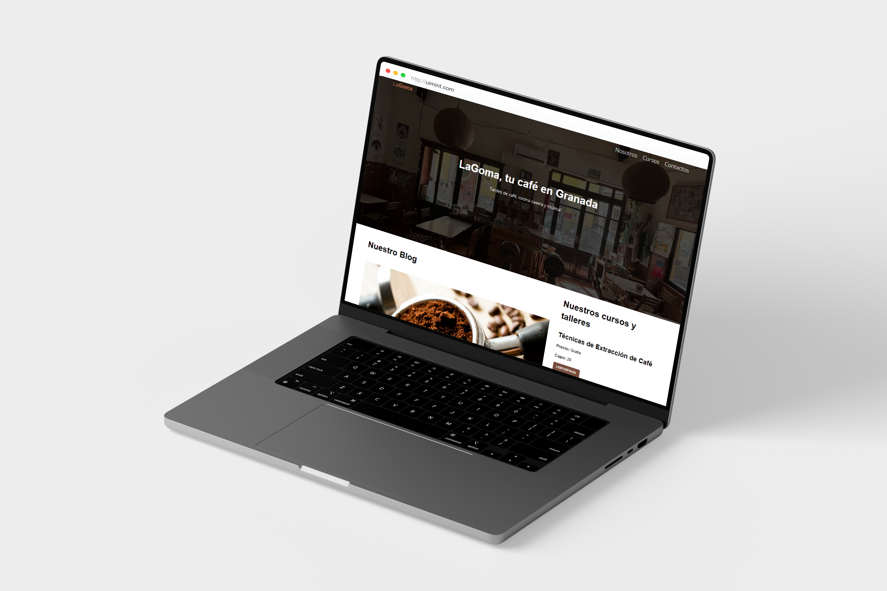

Local Café Blog
Blog Website / Jan 2021
Technologies
Html / Css

Overview
A junior frontend project designed as a blog-themed website for a local café, inspired by WordPress templates. Built using HTML and CSS, the project features a clean layout, showcasing menu items, blog-style updates. The design emphasizes readability and simplicity, with a focus on creating an inviting online presence for the café and disseminate information and build an online community.